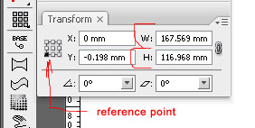

Пропорциональное изменение размера
qsedftghk / 24.09.2010, 16:18/00:41
Форум:
И снова, для тех кто начинает.
Любой объект в люстре можно масштабировать пропорционально с помощью мышки и зажатой клавишы Shift, это понятно и ежу.
Но также, можно масштабировать и на нужное количество единиц с помощью палитры Transform.
Для этого выделяется объект(ы). Далее в палитре Transform выставляем Reference point (точка, относительно которой и будет происходить изменение), в поле "W:" или в поле "H:" вводятся нужные циферки и нажимается Ctrl+Enter

Кстати! Для тех кто особо ленив, практически во всех полях люстры (таких как H и W) можно не тупо вводить циферки, а пользоваться такими операциями как сложение, умножение, вычитание и деление. То есть, нужно, например, пропорционально увеличить объект на 5 мм. Значит В поле W или H к тем циферкам, что там есть пишите "+5" и нажимаете Ctrl+enter
qsedftghk, а зачем Ctrl+enter? почему не просто энтер?
Вообще, просто enter.
Но выше я писал для конкретного примера. То бишь для пропорционального масштабирования.
Ну, не писатель я Санчос, не томи! :D
Если ткнуть на букве или обозначающем слове перед окошком или выделить цифрокое значение в окошке, то можно менять цифровое значение на единицу ,а с нажатой на десятку, используя клавиши стрелка вверх и стрелка вниз.Подобные действия возможны в любой палитре, где есть окна. :P
Добавлено (03.10.2010, 03:29)
---------------------------------------------
Прошу прощения в основном посту забыл добавить Shift
itt, все тайны раскроешь, и что потом писать? :D :D :D